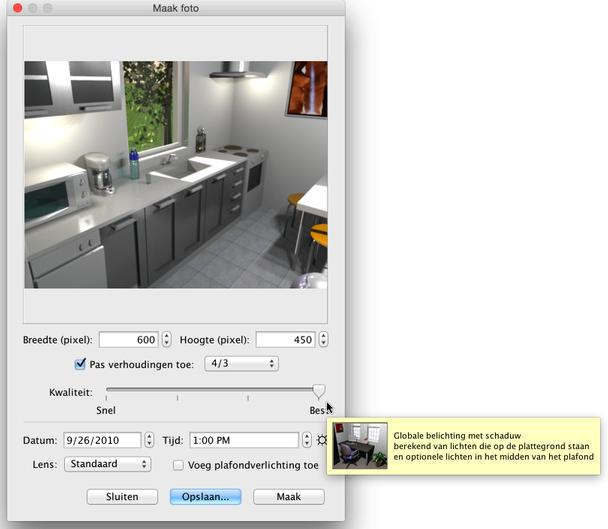
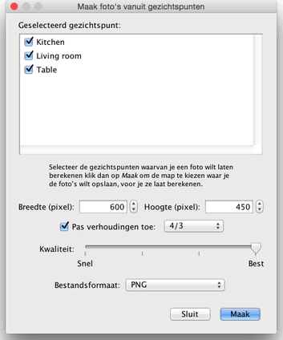

| Foto's maken | |||
Om 3D beelden of foto's te maken, kies 3D beeld > Maak foto... of klik op Maak foto.
Dan zal het volgende dialoogvenster verschijnen, waarin het formaat, de kwaliteit en eventuele andere instellingen die gebruikt worden tijdens het maken van de afbeelding, te zien zijn; samen met de Maak knop dat ervoor zorgt dat het beeld wordt gemaakt en de Opslaan... knop die je de mogelijkheid geeft de weergegeven afbeelding op te laten slaan.  Wanneer je de standaardafmeting van de afbeelding niet goed vind, kun je een andere breedte en hoogte kiezen. Wanneer Vergrendel verhoudingen is geselecteerd, zal de hoogte automatisch aangepast worden aan de breedte volgens de verhoudingen van het veld naast het Vergrendel verhoudingen veld. |
|
|||||||||||||


Op de twee hoogste niveuas hangt het berekende beeld af van de locatie en de kracht van lichten. Standaard wordt de afbeelding berekend in bij middaglicht en met extra lichten automatisch in het plafond van iedere ruimte geplaatst. Wanneer je het licht beter wilt controleren, vink dan het vakje Voeg plafondverlichting toe uit, voeg wat objecten uit de categorie Lichten toe aan de plattegrond en stel de kracht in met de krachtindicator of door hun eigenschappen te bewerken. De kracht van de zon, de kleur en de richting van de stralen hangen af van het uur van de dag en de geselecteerde datum, maar ook van waar het noorden zich bevind, de geografische locatie en de tijdzone; de laatste parameters kunnen worden beheerd in het kompaspaneel. De globale helderheid van de afbeelding hangt ook af van de helderheid zoals die ingesteld is in het 3D beelbewerkingspaneel. Ten slotte kun je in het Maak fotopaneel kiezen tusesn 4 verschillende typen lens.
Als je een groep foto's in één keer wilt berekenen, sla dan de gezichtspunten die je wilt zien op via het 3D-beeld > Sla gezichtspunt op... menu en selecteer 3D-beeld > Maak foto's van gezichtspunten... Er verschijnt een dialoogvenster waarin je de grootte, de beeldkwaliteit en het bestandformaat van de berekende afbeeldingen in kunt stellen, voordat ze worden berekend en opgeslagen in de map van je keuze. Op de twee hoogste kwaliteitsniveau's zullen de datum/tijd en lens die gebruikt worden voor het berekende gezichtspunt de waarden hebben die je als laatste invoerde in het Maak foto venster op het moment dat je dat gezichtspunt wijzigde of opsloeg. Als je het Maak foto venster nog nooit hebt geopend, zal het automatisch 12:00 zijn van de dag waarop het bewerkte huis werd gemaakt.  |


|